CheckMark Tutoring: How-To Guides for Canadians
CheckMark Tutoring: How-To Guides for Canadians Q: So I've decided to sell my car and I live in Ontario. How exactly do I go about doing this?
If you are fine with accepting a lowball offer on your car in exchange for an immediate and hassle free sale, then you can always trade in your used car at a dealership or check out a website like http://www.sellmycar.ca/in-toronto (they will make an offer on your car and pick it up). However, selling privately (e.g. Kijiji, AutoTrader, etc.) is always the best way to get the most money out of your car.
The process of selling your car privately will follow similar procedures across Canada and abroad, but this step-by-step guide is specific to those who live in Ontario.
*Note: If you are transferring a car to an immediate family member or spouse/immediate members of your spouse's family then there are some exemptions that I will cover at the end of this guide (e.g. you do not need a UVIP in this case).
*this guide has been shared on Reddit.com. Click on the link to view feedback and questions about this guide.
OFFICAL  TUTORING HOW TO: Selling a Used Car Privately in Ontario, Canada
TUTORING HOW TO: Selling a Used Car Privately in Ontario, Canada
Steps (click on the link below to go to that step)
1) Obtain a UVIP
2) Consider Getting an E-Test and Safety Test
3) Clean Out the Vehicle and Take Some Pictures
4) Put in Some Fresh Oil and Make Sure the Tires are Inflated
5) Determine your Asking Price
6) Put up a 'For Sale' ad
7) Set up a Meeting with the Buyer and Allow them to Test Drive the Car
8) Show the UVIP, Service Records, E-test and Safety Test to the Potential Buyer
9) If the Buyer Insists: Go with the Buyer to a Mechanic of their Choosing
10) Price Negotiation
11) Once the Buyer has Committed to Buying the Vehicle: Give the Buyer the VIN # to Set Up Insurance for the Vehicle
12) Obtain the Money from the Buyer
13) If the Buyer Wants Service Records/Reports: Remove Personal Information from Records
14) Complete the 'Bill of Sale' and Give the UVIP Package to the Buyer
15) Complete the 'Application for Vehicle Transfer' Portion of your Vehicle Registration Permit
16) Deliver the Vehicle to the Buyer's House or to a ServiceOntario Centre
17) Remove your Licence Plates and Any Other Personal Items from the Vehicle
18) Optional Step: Go to a ServiceOntario Centre and Report the Vehicle as 'Sold'
19) Remove your Insurance Coverage on the Vehicle that You Just Sold
If you are not buying or receiving another car then you're done! If you are buying or receiving another car then follow these additional steps:
20) Inform your Insurance Provider about the Vehicle Change
21) Make Sure your New Car has a Valid Safety Standards Certificate and a Valid Drive Clean Vehicle Emissions Test
22) Visit a ServiceOntario Centre to Register the Vehicle Permit and Licence Plates
23) You're Done! Enjoy your New Vehicle!
- Obtain a UVIP (Used Vehicle Information Package) from ServiceOntario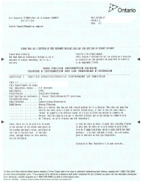
{kind=link}
-
The UVIP will allow buyers to ensure that the name of the person selling the vehicle is the same as the name on the vehicle registration (even if they claim that they are selling for a family member, be wary), to track the vehicle's registration history and corresponding odometer readings at the time of registration, average wholesale value used to calculate retail sales tax (for vehicles that they have enough data on), any liens (debts/money owing) against the vehicle and to determine if the vehicle has been branded (which has nothing to do with the car's make/model but is a vehicle designation by the Ministry of Transportation that indicates whether the car has had major damage and/or has been rebuilt). If the brand is listed as 'None' on your UVIP then that means that there has not been a major collision involving this vehicle (that was reported). The UVIP also includes the 'Bill of Sale' (on page 3 of the UVIP) which is 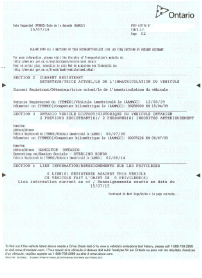 a legal requirement when selling a vehicle and must be filled out and given to the buyer immediately after they purchase the car. *You can view my UVIP in greater detail by clicking on the pictures to the right.
- You can go about getting the UVIP in one of two ways. You can go to a ServiceOntario centre and have the UVIP printed off in about 5 mins OR you can order the UVIP online and wait about 5 business days for it to be mailed to you. I went to a ServiceOntario centre near me and was out of there with my UVIP in about 10 mins. You can find the closest ServiceOntario centre by clicking here.
- You will need to know your vehicle identification number (which can be found on your ownership papers or through the front windshield of your car) and have your driver's licence on hand. It will cost you $20.
- In case you were thinking about skipping this step, just keep in mind that it is illegal to sell a vehicle tosomeone without providing him/her with the UVIP.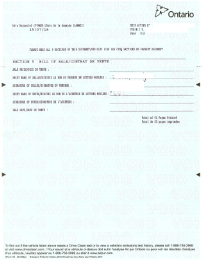
- It is also worthwhile to grab a Used Vehicle Information Sheet (UVIS), which isshown below (click on it for greater detail) that briefly lists buyer and seller responsibilities for used vehicles that have been purchased privately in Ontario. By no means is this a required step, but it will provide you with some important information (although, I will cover everything in greater detail in this guide).
{kind=link}
{kind=link}
{kind=link}
- Consider getting an e-test (aka 'Drive Clean' emissions test) and safety test (aka 'Safety Standards Certificate') done on the vehicle so that potential buyers know that they are getting a road worthy car
- Alternatively, you could say in your ad that you are willing to have the e-test and safety test done once a buyer commits to the car. The buyer would pay after he/she sees that the tests are successful and the car is ready for the road.
- It is NOT a requirement to have these tests done prior to selling your car. However, the buyer will have to have these tests successfully completed (if they are no longer valid) in order to register the vehicle as 'FIT' when finalizing the ownership transfer.
- 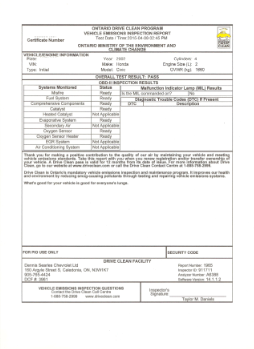A 'Drive Clean' e-test is technically valid for 12 months (1 years) for cars that are 7 years old or more BUT you only have to get the test done every 2 years. Why would the Ontario government do it this way? Well, if your selling the car and the e-test is no longer 'valid' (more than 12 months old) then the buyer will need to have it done before being able to legally drive it. That means more money for the government! If you already have a valid e-test prior to selling the car then the buyer will NOT have to get another e-test done until 2 years from the date that the e-test was successfully completed. If the car model year is older than the current year (e.g. 2014 car in 2015) but less than 7 years old, then an e-test will be required to transfer the ownership of a car. If the ownership of the car was not being transferred, then the car would not need to have an e-test until the car reaches 7 years old. Car owners should note that if your car was made in an even numbered year (e.g. 2006) then the test will need to be done in every uneven numbered year (e.g. 2007, 2009) and should not cost you more than $30. 'Heavy-duty' vehicles (e.g. large trucks and buses) require a new e-test every 12 months (1 year) and do not receive the extra 12-month exemption after the e-test validation expires. You can determine a car's 'Drive Clean' emissions test history by going to this page and typing in the car's Vehicle Identification Number (VIN). *Click on the image to the right to see my Drive Clean emissions test report in greater detail.
- The Safety Standards Certificate is not required to buy and register a vehicle, but the buyer will need it when they want to drive it or put their own plates on the vehicle. The safety test is only valid for 36 days after the inspection and certifies that the vehicle is fit for the road. If you are not sure that you can sell the car within this timeframe (approx. 1 month), then consider waiting until you have an interested buyer before doing the test. You can make a note in the your ad that says that you will take the car in for a safety test for interested buyers prior to them purchasing the car with the purchase being conditional upon whether it passes or fails. Ideally, get the safety test done by a mechanic that you trust (e.g. a long-term customer) as this CAN be like giving a blank cheque to a dealership or other mechanic. They may try to tell you that certain things need to be done in order for your car to pass the safety test which will mean more money in their pockets. The inspection should cost you around $50-$80.
{kind=link}
- Clean out the vehicle (inside and out) and take some pictures!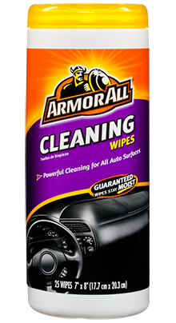
- A quick car wash and vacuum can do wonders for your vehicle's resale value.
- Make sure you clean your car properly or you may end up causing damage.
- Empty the car of all unnecessary items and vacuum.
- Wash the outside of the car and apply a wax to give it a little extra shine.
- Pressure wash the car mats from a distance. If you get too close, the fabric will start to fray but if you do it right, they will look like new.
- Use some 'Armor All Cleaning Wipes' to clean the car's dashboard, vinyl and fabric surfaces (not painted surfaces!). Because they are lint free, they should not leave any residue behind like a washcloth would. Windex (or 'Armor All Glass Wipes') is recommended for cleaning glass.
- Get an air freshener!
- Put in some fresh oil and make sure the tires are inflated correctly
- If your oil is due to be changed soon then you might as well change it now so that when buyers check the oil level/quality they won't be put off by old black oil. It's easy to do! (and cheap enough; around $35 to DIY or $60 with tax included to have it done by a dealership)
- Determine your asking price for the car
- Check around the Internet to see what similar cars are selling for and set your price accordingly. You can change your price at anytime if you aren't getting any interest.
- Keep in mind that buyer's are likely to want to negotiate a lower price so allow some wiggle room (e.g. if you want to sell it for $3,000 then list it at $3,500).
- The Canadian Black Book has a value calculator that can determine the average asking price for most cars. Older cars (greater than 15 years) may not have sufficient data.
- You can also ask your mechanic what he thinks it would be worth.
- Put up a 'For Sale' ad on Kijiji, Craigslist or Autotrader. Consider putting a 'for sale' sign in your car's dashboard.
- I generally just stick with Kijiji since it is free to use and I have had the most luck on their site. Kijiji allows you to post up to two vehicles for free at the same time. It won't hurt to put an ad up on Craiglist as well. Autotrader seems to have a higher concentration of scammers and people trying to sell you unnecessary services to help you sell your car.
- Some people prefer buying the 'old-school' way and search for cars with 'for sale' signs. Buyers will often feel more comfortable knowing they are buying from the neighbourhood.
- Be honest: If there are known issues with the car then you SHOULD list them or have them fixed.
- Include the make, model, year, engine size, transmission type, car's condition, add-ons/extras/luxury features (e.g. sunroof, snow tires), mileage, etc. in the ad
- Indicate that you have the UVIP, ownership permit and service records available for potential buyers. You should be able to obtain service records from dealerships and other established mechanics so that buyers can see a summary of all work that has been done on the vehicle.
- Set up a meeting with the buyer and allow them to test drive the car using a spare key AFTER they provide you with their driver's licence (take a picture or photocopy) and they sign a waiver in case of accident while test driving
-
I generally set up the meetings at my house since I don't have to be worried about being stranded if someone doesn't show up. I also make sure I have someone at my house to collect the potential buyer's information (e.g. driver's licence photocopy/picture) in the unlikely event that I don't come back in a reasonable time. If you are meeting somewhere other than your home, ideally a very public place such as a mall parking lot, I would recommend bringing someone along with you.
- Remove any valuable items from the car. Unfortunately, thieves do exist.
- Bring your cell phone in case of emergency.
- Don't give them your entire keychain with house keys and everything! Use a spare key.
- The majority of buyers are going to want to test drive your car to make sure it is in good working order (wouldn't you?). The best way to do this safely is to take a picture of both sides of their driver's license (make sure it hasn't expired!), have them sign a waiver that says they are responsible for paying for any damages if they get in an accident while test-driving the car, and leave this information with someone at your home.
- Personally, I prefer to go with the buyer on the test drive (so I can highlight the car's strengths) though I understand why others may disagree (R.I.P. Tim Bosma). If you would rather let them test-drive the car on their own then this should also be fine. Keep in mind that it will be the seller's insurance that is used in case of an accident during a test drive. This is why it is important to get the potential buyer to sign the waiver form. IF you allow the potential buyer to test drive the car without you accompanying them, then put a 15 minute time limit on the drive (otherwise they could have a lot of time to strip the car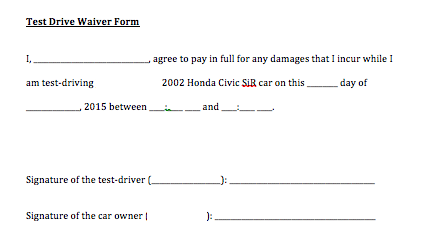 of valuable parts). 30 mins is the most time you should allow for a test drive with you in the car.
- Make sure that both the seller and potential buyer's signatures are on the waiver. This what I have the potential buyer fill out on the waiver: I, ______________________________, agree to pay in full for any damages that I incur while I am test-driving [insert your full name] [insert the year, make and model of your car] car on this ________ day of ______________, 2015 between ____:____ ____ and ____:____ ____.
- If you allow the potential buyer to take the car out on his/her own, then ask them to leave something in return (e.g. keys to their car if they drove, phone, major credit card, etc.) that will ensure they come back.
- Show the UVIP to any interested buyers (legally required), service records/history of maintenance on the car, e-test report and safety test report (recommended).
- If you don't have the service records for your car, there is a good chance that your mechanic will have this computerized. Your mechanic would be happy to provide you with this. Dealerships are required to keep a log of all of the work that is done on your car and should be able to print off a copy for you at your request.
- Below is a copy of my dealership service records. *You can view my service records in greater detail by right clicking on the picture to the right and then clicking view image.
{kind=link}
- IF the buyer asks to take the car for an inspection, then go with them to the mechanic of their choosing.
- This is a normal part of the buying/selling a used car process. Potential buyers will take the car for a 'Pre-purchase inspection' to determine the condition of the car and highlight any potential vehicle issues that could arise in the future. This will probably cost the buyer around $150 and can take up to 2 hours.
- An even more convenient option for the seller would be to have the mechanic come to the car as opposed to bringing the car to the mechanic.
- IF the buyer tries to negotiate a lower price, you can give him/her a bit of a deal but don't allow them to lowball you too much
- You should already know what your car is worth by researching comparable vehicles on Kijiji, Craigslist, Autotrader and used car dealerships in your area. Buyers will likely want to negotiate the price down so it is often useful to set the price a little higher than what you are willing to sell for so there is some room for negotiation.
- You can always say, 'No, I think I'm going to stick with my current asking price. I have a few interested buyers that I am supposed to meet up with later this week.' This puts some pressure on the potential buyer and keeps the price where you want it.
- Once the buyer has committed to purchasing the vehicle, provide the buyer with the VIN # to set up insurance for the vehicle so he/she has the ability to register the vehicle in his/her name right after purchasing (needs to be done prior to registering the vehicle)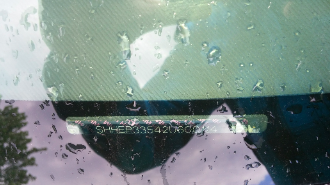
- The VIN (Vehicle Identification Number) can be found on your vehicle permit(aka ownership document) and through the front windshield on your car. All VINs can be seen from outside of the car and therefore, it is not important to keep this information private since it can be seen by anyone (just like your licence plates).
- Obtain the required funds from the buyer for the car
- 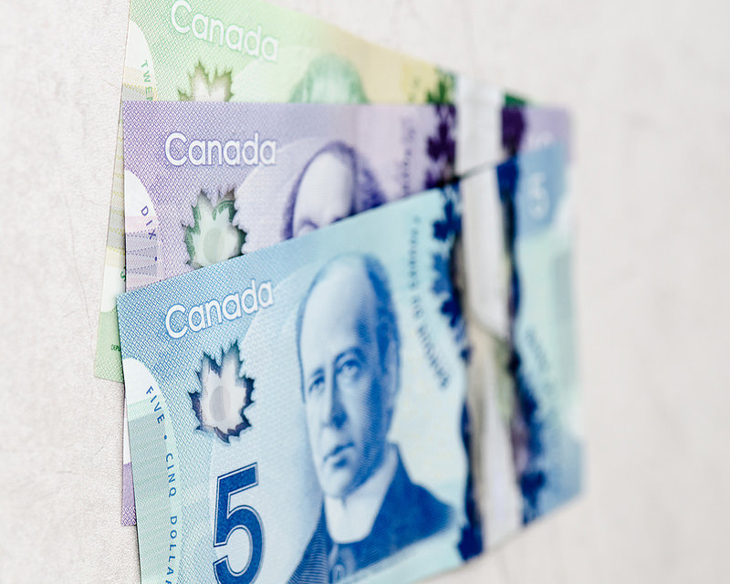This part is probably the trickiest part in the process for the seller since they want to make sure they safely get the money BEFORE giving their car away.
- It is recommended that you complete the transaction at the buyer's bank so that you can verify the authenticity of the payment. Personally, I would watch the buyer obtain the money from a bank teller in the form of a certified cheque, which is guaranteed by the bank. It certifies (by the buyer's bank) that the funds are available, validates the account holder's signature and the bank guarantees that the funds will remain available until the cheque is cashed by the payee. Analyse the cheque to ensure that it isn't post-dated, that it is made out to you and that it isn't a counter cheque (no preprinted name, address or account number). It CAN be faked so it is important to be there when it is issued to avoid getting scammed. If the certified cheque is determined to be legitimate (not fake) there is NO risk for you as the seller. For a cheque from a Canadian bank, it can take up to 6 business days for the money to be confirmed so it is important to know that the cheque is legit before giving away your car. Cash (once identified as legitimate by a bank) or wire transfers (Interac e-transfers) would also generally be safe forms of payment. For money orders and bank drafts (the bank puts up the funds and has already taken the money out of the buyer's bank account), you could have your bank call the buyer's bank (which the cheque is issued from) to make sure that it is legitimate and to verify the information on it before giving away your car (e.g. give them the branch/account numbers and ask them to verify that the money was drawn out properly). OR, like I recommended with a certified cheque, go to the bank with the buyer and have him order the bank draft/money order right in front of you. Going to the bank with the buyer is always the safest way to ensure legitimacy of the payment.
- If a deposit is made and the buyer wants to pay the rest of the money at a later date, the buyer will often request a sales agreement (written contract) that states that you will give the car to them once the rest of the money has been given to you. Make sure that if you decide to do this, you write in the sales agreement that the buyer will have to wait until the cheque/payment clears with your bank before the keys are handed over. You should also include in the sales agreement that after X number of days, you will need to be paid the remaining amount in full or you will sell to others who are interested. It is important to clearly define a time frame for completing the purchase.
- If the car buyer insists on using a personal cheque or other form of payment that you have not verified completely (e.g. bank draft or certified cheque that you did not see him order), then ask him to wait (could take over a week) until the cheque/money clears with your bank before giving the car away.
- Don't accept the 'well the banks aren't open on the weekend' excuse for why they won't go to the bank with you to get the payment verified (e.g. cash, certified cheque, bank draft, etc.). Find a time that works for both the seller and buyer to be at the bank together during the weekday (or weekend depending on the bank's hours).
- IF you can't be bothered to go to a bank to do the transaction (not recommended by me), then definitely make sure that you receive cash and go somewhere public where you can check to make sure the cash isn't counterfeit (e.g. Tim Hortons restaurants will usually have a machine that verifies cash) before handing over the keys.
- If you are giving the buyer service records or car reports with the purchase, make sure that any sensitive personal information (e.g. banking info, etc.) is blacked out or cut out of the report.
- Complete the 'Bill of Sale' portion of the UVIP and then give the entire UVIP package to the buyer. This is not an option as it is legally required!
- The Bill of Sale is the last page in your UVIP package and requires the sales price, sale date and the names/signatures of both the seller and buyer.
- IMPORTANT: Photocopy the completed bill of sale AND the completed ownership papers so you have a proof of the transaction just in case the buyer doesn't register the vehicle into his/her name within the required 6 days. It would also be a good idea to make sure the name that the buyer put on the Bill of Sale matches up with his/her driver's licence.
- Try not to make any mistakes on the Bill of Sale, especially regarding the price, as they may think that the buyer tampered with the document so that they would have to pay less sales tax. If ServiceOntario thinks that this is the case, then there is a chance that they will not accept the document.
- NOTE: Though it is technically illegal (and therefore I do not recommend it), many sellers will list the sale price on the Bill of Sale as lower than the actual amount that was payed to them. This doesn't help the seller in any way (nor is it likely to get you in trouble), but rather will lower the sales tax that the buyer will have to pay when they register the vehicle in their name. The buyer will pay the greater of: the purchase price or the wholesale value, which will be listed on the first page of the UVIP only if there is sufficient data to determine an average sales price for the car. If there is not a 'wholesale value' listed on the UVIP then ServiceOntario will use the purchase price to determine the sales tax on the vehicle. If you decide to do this, just make sure that you receive all of the money you are owed BEFORE writing down the lowered sale price amount on the Bill of Sale.
- Locate your vehicle registration permit (aka ownership papers) and complete/sign the 'Application for Vehicle Transfer' portion
- The 'Application for Vehicle Transfer' portion can be found on the backside of the permit. Detach this portion of the vehicle registration permit and give it to the buyer AFTER filling it out fully and signing it. Make sure that the buyer includes ALL of his information (name, address, etc.) before signing off to ensure that the vehicle has the buyer's name listed as the owner (and verify this info with his driver's licence). Photocopy the completed 'Application for Vehicle Transfer' (along with the Bill of Sale) for your records.There have been some horror stories of untrustworthy buyers defaulting on their towing charges so that the charge ends up going to the seller since they were technically the 'registered' owners at the time.
- The seller keeps the 'Plate' half of the permit which should have your plate validation stickers on the backside of the permit (so you can register your license plates on another vehicle.
- My entire vehicle permit (front and back) can be found below with personal information omitted . *You can view the front and backside of my vehicle permit in greater detail by right clicking on the picture to the right and then clicking view image. 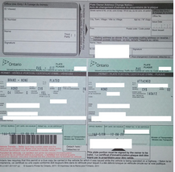 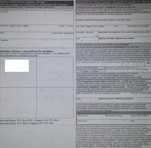
{kind=link}
{kind=link}
- The buyer may want you to deliver the car to their house or to a ServiceOntario centre since you have to take the license plates off and they won't be able to drive it without plates (until they get the vehicle insured and transfer ownership over)
- This is completely fine. If they are worried about you taking off with the car then have them come with you, but make sure you cash the certified cheque first or get someone else to hold on to it.
- If they insist on driving then have them sign a waiver to state that they will need to pay for damages if they get in an accident. Just make sure that you have someone willing to pick you up in another car when you get to the buyer's house/ServiceOntario centre.
- The buyer CANNOT put their plates on the vehicle without registering them to the vehicle first
- Some alternatives to delivering the car to their house would be to have the car towed or to get a 10-day temporary registration/plates (will have a big 'T' sticker on the plates) from a ServiceOntario centre. The temporary licence sticker costs $15 and is attached to the buyer's old or new licence plates (extra $29 for new licence plates that can be issued on the same day at a ServiceOntario centre). To get temporary registration/plates, the buyer will need to have the vehicle insured but it does not necessarily have to have a valid safety or emissions test.
- Provide the buyer with all spare keys, winter tires and any other accessories that you agreed to include in the sale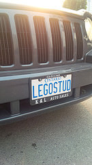
- Remove your licence plates and any other personal items you may have left in the car
- Ontario has a plate-to-owner registration system so you can keep your plates for the next vehicle.
- Although this step is not required, sellers may wish to report the vehicle as 'sold' by going into a ServiceOntario centre
- This is only to give some peace of mind that the deal has been finalized and so that the vehicle will no longer be registered in the seller's name. The ServiceOntario representative will get you to write out that you wish to put a 'SOLD' status on the car with the corresponding VIN and then sign/date it. They will offer to have it photocopied for your records.
- If you skip this step, the vehicle remains registered in your name until the buyer registers his/her name on the vehicle by going to a ServiceOntario centre with the UVIP and the 'Application for Vehicle Transfer' portion of the vehicle registration permit. The buyer SHOULD do this within six days and is offence under the Highway Traffic Act if they take any longer than this.
- Call your insurance provider to remove coverage on the vehicle that you just sold
*IF you are not buying or receiving another car then you're done! If you are buying or receiving another car then follow these additional steps...
- You will need to inform your insurance provider about the vehicle change in order to transfer the insurance PRIOR to registering the vehicle in your name
- 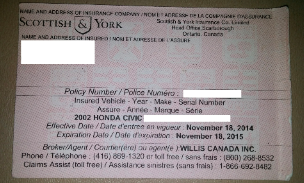In order to register the car as the owner with the MTO (Ministry of Transporation) and put plates on the vehicle you will need to have insurance on the vehicle. So do this before going to a ServiceOntario centre.
- The insurance company will send you a pink insurance slip in the mail but you should ask them for the policy number. If you have the name of the insurance company and the policy number, then you may be able to use this to register and put plates on your vehicle.
{kind=link}
- Make sure that the car that you are receiving has a valid Safety Standards Certificate (valid for 36 days after inspection) AND a valid Drive Clean vehicle emissions test (valid for 1 year, but you only need to have it tested every 2 years once the vehicle is in your possession)
- If these tests have not been completed then you can obtain a temporary 10-day licence plate sticker from a ServiceOntario centre so that you can drive the vehicle to a garage to have it tested. However, you will need to have these tests done in order to legally put plates on the vehicle. The temporary licence sticker costs $15 and is attached to your licence plates (or new plates if needed). In order to obtain the temporary licence, you will be required to bring proof of insurance (insurance company name and policy number) and the vehicle permit that indicates that the vehicle is "fit" with the back of the permit signed and completed by the owner. IF you want the vehicle registered in YOUR name and want to attach the temporary licence plate sticker to your old plates, then you will need to also bring in the plate portion of your old vehicle permit. IF you want to register the vehicle in YOUR name and want to attach the temporary licence plate sticker to NEW plates, then you will have to pay an additional $29. The ServiceOntario centre can provide you with the licence plates on-site immediately after giving them the required information.
- You will need to visit a ServiceOntario centre to register the vehicle permit (using the vehicle permit portion of the ownership document that you should have obtained from the previous owner) and register the plates to the new vehicle (using the plate portion of the ownership document from your recently sold vehicle)
- Bring in the UVIP (with Bill of Sale), vehicle permit with completed Application for Vehicle Transfer', proof of Safety Standards Certificate and Drive Clean emissions test certificates, your driver's licence, proof of car insurance (which is a legal requirement to drive in Ontario) and odomoter reading information (how many KM does the car have?).
- The transfer portion of the permit should already have been completed together with the seller (or whoever you are getting the car from).
- Bring in the plate portion of the permit for your recently sold vehicle.
- The vehicle permit will cost you $14 and you can reuse your old plates. If you want a new licence plate (new or replacement) with a permit you will need to spend $29. If you require a new licence plate sticker, then that will cost you an additional $98 if you live in Southern Ontario (only $49 in Northern Ontario). The ServiceOntario centre can provide you with vehicle permits and licence plates (if they aren't personalised) on-site immediately after giving them the required information.
- The retail sales tax for the sale of the vehicle will be collected at the ServiceOntario centre when you register (assuming you weren't gifted the car). This tax will be based on the higher amount of: the purchase price OR the vehicle's wholesale value (which is the average amount paid for your car model and should be listed on the UVIP if they have sufficient data for your car model). The sales tax is 13% in Ontario (e.g. you will pay $1,300 in sales tax for a $10,000 car).
- If the wholesale value of the vehicle (found on UVIP) is below $1,000, then you will not be required to pay sales tax on the vehicle.
- You can receive a refund on remaining months of plate validation if you are not planning on using them again.
- If the car you are buying doesn't have plates on it, then you will have to find someone to drive you to and from the ServiceOntario centre.
- NOTE: If you are getting your car from a dealership, then the vehicle registration will often be completed by them.
- By the end of this process you should have a vehicle that meets the safety and emissions standards, insurance for the vehicle, a brand new permit that says you are the legal owner of the vehicle and license plates with up-to-date validation stickers.
*IF you are receiving a vehicle from an immediate family member or spouse/immediate members of your spouse's family then keep in mind that...
- You will not need to pay the retail sales tax when transferring ownership. However, in order to do this, you will need to fill out a completed sworn statement for a 'Family Gift of a Used Motor Vehicle in the Province of Ontario' form and bring this to the ServiceOntario centre (both parties need to be present)
- You will also NOT need to get a UVIP from the car owner.
- If you are transferring a car to an immediate family member AND the car is less than 7 years old, then you likely do not require a Drive Clean test. However, you must fill out an exemption form
- The only other exception is that if it is a spouse-to-spouse transfer (unlike father to son transfers, other immediate family members, etc.), then a Safety Standards Certificate AND Drive Clean emissions test will be not required IF the licence plate is also being transferred with the car (requires completed 'Plate Transfer Declaration'). All other transfers follow the same procedures as a regular kijiji used car purchase when it comes to Drive Clean emissions tests and Safety Standards tests.
*IF you are buying another vehicle prior to selling your old vehicle...
- ServiceOntario (and dealerships, if you are buying a new car) will require you to show proof of insurance on a newly purchased vehicle in order to have the car plated and to have the ownership transferred into your name. If you have purchased a new vehicle before selling your old one, then it may make sense to have insurance on both cars until you sell your old car. Insurance companies should be able to provide you with a same day invoice (emailed to you) on an insurance policy for a new car which is acceptable as proof of insurance for ServiceOntario.
- You can talk to your insurance company about getting short-term insurance on the car you are trying to sell since you will likely want to allow potential buyers to test-drive the car. This means you will have two cars on your insurance policy for a short period of time. Insurance companies will often give multi-vehicle insurance discounts and you can cancel the insurance on the vehicle you are selling whenever you like. It cost me an extra $95 per month to insure two vehicles instead of one and if you sell it in less then a month then they will refund you that amount (e.g. it would only have cost me an extra $47.50 for two weeks of insurance on a second vehicle). You can obtain new licence plates for your new car at a cost of $29, a new sticker for your licence plates at a cost of $98 in Southern Ontario and can have the remaining months on your old car (indicated by the licence plate sticker) refunded once you sell your old car. The ServiceOntario centre can provide you with vehicle permits and licence plates (if they aren't personalised) on-site immediately after giving them the required information. To get a refund for your old licence plates (if they are still valid), bring your old plates and the plate portion of the vehicle permit to a ServiceOntario centre.
Comments - Ask questions and/or provide feedback below!
*you can comment as a guest without registering/signing in by clicking on the 'Name' box below and checking the 'I'd rather post as a guest' box. If you don't feel comfortable providing your own email, you can just make one up (e.g. fakeemail@gmail.com).